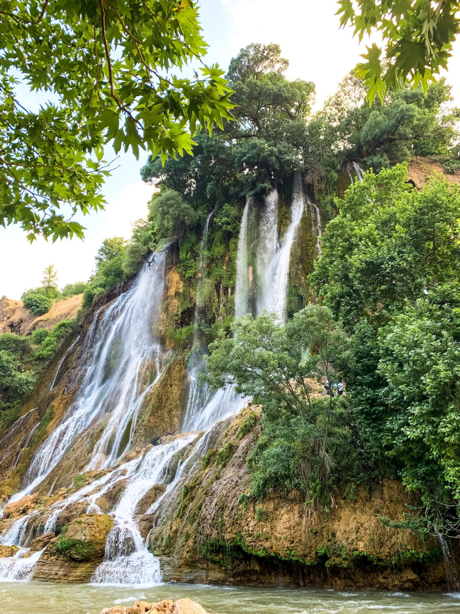

About the writer
From the Writer’s Desk
From Writer's Desk


Travelogues by passionate blogger. As the adage goes : “Wander for Distraction but Travel for Fulfillment” So lets together explore the world beyond our silos. Let these travelogues inspire and motivate you to pack your bags, book your tickets and plan your next destination. That may be a country or some famous cities, a cruise over the sea or ocean surface, a captivating jungle safaris or by invigorating yourself in the wilderness immersing without inhibition in tranquility with mother nature. The writer’s endeavor should be to pen with intricacy in a way such that his readers vicariously enjoy these writings as experiences of his own. The success of a writer presumably depends directly upon the degree at which he/she is able to achieve this challenging objective. A imperative that should always remain embedded in writing a travelogues by passionate blogger. The genesis of Bhupender Gupta’s penchant for writing comes from the time he was the President of Student’s Union during his University days where writing press notes or letters to Who’s who in the field of Journalism or Politics was a matter of routine. Writing on social issues is therefore a natural corollary. Travelling and photography became a serious hobby post partial retirement. Clicking pictures, penning travelogues now create a different pleasure. Moreover watching your personal experiences become a source of knowledge, inspiration and happiness albeit vicariously to others is equally enchanting as well as heartening. A technocrat by education and a businessman by profession, tight schedule till date had made travel an unintended casualty. However the writer has now taken a conscious decision to visit exotic destinations across the globe, click pictures with his own dslr and pen experiences through hopefully engaging travelogues. As a mark of encouragement, a request, please read the travelogues by passionate blogger and comment under cementing a better writer-reader relationship.